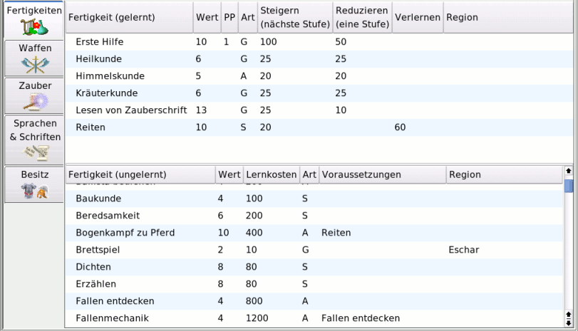

MAGUS - Hilfe
|
Bedienung |
|||||||||||||||
Fertigkeiten |
||||||||||||||||
Notebookseite Fertigkeiten
|
||||||||||||||||
| Zum Seitenanfang | ||||||||||||||||
Allgemeine BeschreibungDie Notebookseite "Steigern" dient dazu, neue Fertigkeiten zu erlernen, bzw. bereits erlernte Fertigkeiten zu vervollkommnen. (steigern).Im wesentlichen besteht diese Seite aus zwei Auswahlfenstern. Im oberen Fenster sind die bereits gelernten Fertigkeiten aufgelistet, im unteren Fenster stehen die erlernbaren Fertigkeiten. Hierbei handelt es sich um solche Fertigkeiten, deren Voraussetzungen, was "Typ" und "Basiswerte" betrifft, erfüllt sind. Auf welche Art das (Er-)Lernen von Fertigkeiten erfolgt, wird zum einen über die Verteilung von EP und Geld, zum anderen über die Art des Steigerns festgelegt. In beiden Fenstern werden der "Name der Fertigkeit", der "Erfolgswert", die "Art der Fertigkeit" (A = Ausnahme-, S = Standard-, G = Grundfertigkeit), die Kosten sowie die "Region" in den jeweiligen Spalten angezeigt. ("Region" bezieht sich auf auf die Regionalbände, bzw. Regelerweiterungen, denen diese Fertigkeiten enstammen und im Menü "Regionen" ausgwählt wurden.) |
||||||||||||||||
| Zum Seitenanfang | ||||||||||||||||
gelernte FertigkeitenIm oberen Auswahlfenster werden die gelernten Fertigkeiten aufgelistet. Diese können gesteigert, reduziert oder verlernt werden.Steigern:Ist der Steigern-Button aktiviert, so wird durch einmaliges(!) Anklicken der entsprechenden Fertigkeit ihr Erfolgswert um 1 erhöht. Die hierfür aufzuwendenden Erfahrungspunke werden in der Spalte "Steigern (nächste Stufe)" angezeigt. Reduzieren: Wurde der Reduzieren-Button aktiviert, so wird durch einmaliges(!) Anklicken der entsprechenden Fertigkeit ihr Erfolgswert um 1 gesenkt, sofern der Erfolgswert größer als der Minimalwert der Fertigkeit ist. Der FP-Betrag wird in Form von AEP gutgeschrieben. Der FP-Betrag, den eine Reduktion "freisetzt" wird in der Spalte "Reduzieren (eine Stufe)" angezeigt. Ist eine weitere Reduktion nicht möglicht, so ist diese Spalte leer. Verlernen: Eine Fertigkeit, die auf ihrem minimalen Erfolgswert beherrscht wird, kann durch einmaliges(!) Anklicken der gewünschten Fertigkeit verlernt werden, wenn der Verlernen-Button aktiviert ist. Die hierbei anfallenden FP werden in der Spalte "Verlernen" angezeigt und beim Verlernen in Form von AEP gtugeschrieben. Wird in dieser Spalte kein Wert angezeigt, so kann diese Fertigkeit nicht verlernt werden. Anmerkung: Die Möglichkeit zum Reduzieren und Verlernen von Fertigkeiten dient in erster Line dazu, Fehleingaben zu korrigieren. In der Spalte PP werden Praxispunkte angezeigt, die in dieser Fertigkeit erworden und eingegeben wurden. |
||||||||||||||||
| Zum Seitenanfang | ||||||||||||||||
ungelernte FertigkeitenIm unteren Auswahlfenster sind alle (ungelernten) Fertigkeiten aufgeführt, deren (Mindest-)Anforderungen an den Abenteurertyp und die Basiswerte erfüllt sind. Für das Erlernen einiger Fertigkeiten, muss zuvor bereits eine andere Fertigkeit erlernt worden sein. Diese Voraussetzungen werden in der Spalte "Voraussetzungen" angezeigt.In der Spalte "Lernkosten" werden die benötigten EP zum Erlernen der Fertigkeit angezeigt. Die gewünschte Fertigkeit wird durch einmaliges(!) Anklicken erlernt und im oberen Fenster mit den gelernten Fertigkeiten angezeigt. Ausnahme "Zaubern": Beim Erlernen dieser Fertigkeit erfolgt eine Abfrage, ob das Erlernen wirklich erwünscht ist. Diese Fertigkeit wird nach dem Erleren nicht im oberen Fenster angezeigt und ist nicht mehr verlernbar. |
||||||||||||||||
| Zum Seitenanfang |